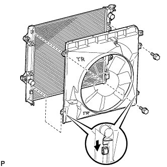
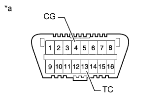

ДВИГАТЕЛЬ В СБОРЕ > УСТАНОВКА |
| 1. УСТАНОВИТЕ КРЮК ДЛЯ ВЫВЕШИВАНИЯ ДВИГАТЕЛЯ № 1 |
 |
Установите 2 крюка для вывешивания двигателя, закрепив их 2 болтами, как показано на рисунке.
| *a | Левая сторона |
| *b | Правая сторона |
| Крюк для вывешивания двигателя № 1 | 12281-75040 |
| Болт | 91552-A1020 |
| 2. СНИМИТЕ ДВИГАТЕЛЬ СО СТЕНДА |
С помощью устройства для подъема двигателя и цепного блока подвесьте двигатель.
Поднимите двигатель и снимите его со стенда.
| 3. УСТАНОВИТЕ ДВИГАТЕЛЬ В СБОРЕ |
Медленно опустите двигатель в моторный отсек.
Закрепите двигатель 4 болтами и 4 гайками.
 |
| *1 | Захват (стопор) |
| *2 | Кронштейн |
| *a | Правильно |
| *b | Неправильно |
Выверните 2 болта и снимите 2 крюка для вывешивания двигателя.
| 4. УСТАНОВИТЕ ЗАДНЮЮ КРЫШКУ |
Установите заднюю крышку и закрепите ее 2 болтами.
Присоедините пылезащитное уплотнение картера маховика.
| 5. УСТАНОВИТЕ МАХОВИК В СБОРЕ (для моделей с механической трансмиссией) |
 |
Зафиксируйте коленчатый вал с помощью SST.
Очистите болты и болтовые отверстия.
Нанесите герметик на 2-3 концевых витка резьбы каждого из 10 болтов.
В несколько этапов вверните и равномерно затяните 10 болтов. Последовательность затяжки показана на рисунке.
Отметьте верхнюю сторону болтов краской.
Затяните 10 болтов на 90° в той же последовательности.
Убедитесь, что метки повернуты на 90° относительно верхнего положения.
| 6. УСТАНОВИТЕ ВЕДОМЫЙ ДИСК СЦЕПЛЕНИЯ В СБОРЕ (для моделей с механической трансмиссией) |
Вставьте SST в ведомый диск сцепления. Затем вставьте SST (вместе с ведомым диском сцепления) в маховик, чтобы установить ведомый диск сцепления.
 | Со стороны маховика |
| 7. УСТАНОВИТЕ КОЖУХ СЦЕПЛЕНИЯ В СБОРЕ (для моделей с механической трансмиссией) |
Совместите сборочные метки кожуха сцепления и маховика.
| *a | Метка |
Равномерно затяните 6 болтов в последовательности, показанной на рисунке, начиная с болта, который расположен сверху около штифта.
| 8. ПРОВЕРЬТЕ И ОТРЕГУЛИРУЙТЕ КОЖУХ СЦЕПЛЕНИЯ В СБОРЕ (для моделей с механической трансмиссией) |
С помощью индикатора часового типа с роликовым датчиком измерьте отклонение конца диафрагменной пружины.
| 9. УСТАНОВИТЕ ВЕДУЩИЙ ДИСК И КОРОННУЮ ШЕСТЕРНЮ В СБОРЕ (для моделей с автоматической трансмиссией) |
|
Зафиксируйте коленчатый вал с помощью SST.
Установите переднюю распорную втулку, ведущий диск и заднюю распорную втулку на коленчатый вал.
| *1 | Передняя распорная втулка ведущего диска |
| *2 | Ведущий диск и коронная шестерня |
| *3 | Задняя распорная втулка ведущего диска |
| Сторона трансмиссии |
Очистите болты и болтовые отверстия.
Нанесите герметик на 2-3 концевых витка резьбы каждого из 10 болтов.
В несколько этапов вверните и равномерно затяните 10 болтов. Последовательность затяжки показана на рисунке.
| 10. УСТАНОВИТЕ ЗАДНЮЮ ПОДУШКУ ОПОРЫ ДВИГАТЕЛЯ № 1 |
Для моделей с автоматической трансмиссией:
Установите подушку опоры двигателя на трансмиссию и закрепите ее 4 болтами.
Установите теплозащитный экран задней опоры двигателя на подушку опоры двигателя.
Установите поперечину рамы на подушку задней опоры двигателя и закрепите ее 4 болтами.
Для моделей с механической трансмиссией:
Установите подушку опоры двигателя на трансмиссию и закрепите ее 4 болтами.
Установите теплозащитный экран задней опоры двигателя на подушку опоры двигателя.
Установите поперечину рамы на подушку задней опоры двигателя и закрепите ее 4 болтами.
| 11. УСТАНОВИТЕ МЕХАНИЧЕСКУЮ ТРАНСМИССИЮ В СБОРЕ (для моделей с механической трансмиссией) |
Установите механическую трансмиссию в сборе (Нажмите здесь).
| 12. УСТАНОВИТЕ АВТОМАТИЧЕСКУЮ ТРАНСМИССИЮ В СБОРЕ (для моделей с автоматической трансмиссией) |
Снимите автоматическую трансмиссию в сборе (Нажмите здесь).
| 13. УСТАНОВИТЕ СТАРТЕР В СБОРЕ |
Для моделей мощностью 1,4 кВт:
Установите стартер в сборе (Нажмите здесь).
Для моделей мощностью 2,0 кВт:
Установите стартер в сборе (Нажмите здесь).
| 14. УСТАНОВИТЕ УСТАНОВОЧНЫЙ БОЛТ ВЕДУЩЕГО ДИСКА И МУФТЫ ГИДРОТРАНСФОРМАТОРА (для моделей с автоматической трансмиссией) |
 |
Проверните коленчатый вал, чтобы обеспечить доступ к местам установки 6 установочных болтов муфты гидротрансформатора, и, удерживая ключом болт шкива коленчатого вала, вверните каждый болт.
Установите пылезащитное уплотнение картера маховика.
| 15. УСТАНОВИТЕ ПЕРЕДНИЙ КАРДАННЫЙ ВАЛ В СБОРЕ |
Совместите метки на вилке и фланце дифференциала.
Установите карданный вал в сборе и закрепите его 4 болтами, 4 шайбами и 4 гайками.
Совместите метки на вилке и фланце раздаточной коробки.
Закрепите карданный вал в сборе с помощью 4 шайб и 4 гаек.
| 16. УСТАНОВИТЕ КАРДАННЫЙ ВАЛ В СБОРЕ |
Совместите метки на фланце карданного вала и фланце дифференциала.
Установите карданный вал в сборе и закрепите его 4 болтами, 4 шайбами и 4 гайками.
Нанесите метки на фланец карданного вала и фланец раздаточной коробки.
Закрепите карданный вал в сборе с помощью 4 шайб и 4 гаек.
| 17. УСТАНОВИТЕ ПЕРЕДНЮЮ ВЫПУСКНУЮ ТРУБУ В СБОРЕ |
 |
При помощи штангенциркуля замерьте длину пружины сжатия в свободном состоянии.
Установите приемную трубу на опору трубы.
С помощью молотка с пластмассовым покрытием и деревянного бруска запрессуйте новую прокладку до тех пор, пока ее поверхность не окажется на одном уровне с выпускным коллектором.
| *1 | Прокладка |
| *2 | Деревянный брусок |
Подсоедините приемную трубу к выпускному коллектору и закрепите ее 2 пружинами сжатия и 2 болтами. Поочередно затяните гайки в несколько этапов.
| 18. ПОДСОЕДИНИТЕ ЖГУТ ЭЛЕКТРОПРОВОДКИ ДВИГАТЕЛЯ |
Закрепите кронштейн левой подушки опоры двигателя болтом.
Присоедините 3 зажима и подсоедините жгут электропроводки двигателя с правой стороны автомобиля.
 |
Подсоедините разъем ECM.
Присоедините уплотнительную шайбу к опоре жгута проводов.
| *1 | Уплотнительная шайба |
| *2 | Опора жгута проводов |
Пропустите жгут проводов в автомобиль и установите опору жгута проводов.
 |
Для моделей с левосторонним рулевым управлением:
Введите в зацепление 2 зажима.
| *A | Для моделей с левосторонним рулевым управлением |
| *B | Для моделей с правосторонним рулевым управлением |
Для моделей с правосторонним рулевым управлением:
Закрепите зажим.
 |
Подсоедините 9 разъемов и зажим.
| *A | Для моделей с левосторонним рулевым управлением |
| *B | Для моделей с правосторонним рулевым управлением |
Установите дверцу перчаточного ящика (Нажмите здесь).
 |
Подсоедините разъем и зажим.
Подсоедините жгут проводов, закрепите 2 зажима и заверните гайку.
Закрепите провод соединения с массой и жгут электропроводки двигателя 2 зажимами и болтом.
| *a | 45° или менее |
| 19. УСТАНОВИТЕ УПЛОТНЕНИЕ № 1 МЕЖДУ ФАРТУКОМ ЛЕВОГО ПЕРЕДНЕГО КРЫЛА И РАМОЙ |
Закрепите уплотнение между фартуком переднего крыла и рамой 5 фиксаторами.
| 20. УСТАНОВИТЕ УПЛОТНЕНИЕ № 1 МЕЖДУ ФАРТУКОМ ПРАВОГО ПЕРЕДНЕГО КРЫЛА И РАМОЙ |
Закрепите уплотнение между фартуком переднего крыла и рамой 5 фиксаторами.
| 21. ПОДСОЕДИНИТЕ КОМПРЕССОР СИСТЕМЫ КОНДИЦИОНИРОВАНИЯ В СБОРЕ |
Временно установите компрессор системы кондиционирования и закрепите его 4 болтами.
При установке компрессора системы кондиционирования затягивайте болты в последовательности, показанной на рисунке.
Подсоедините разъем.
Закрепите трубопровод низкого давления болтом.
| 22. УСТАНОВИТЕ ЛОПАСТНОЙ НАСОС В СБОРЕ |
Закрепите лопастной насос 2 болтами.
Подсоедините 2 разъема.
Установите нагнетательную трубку с помощью болта.
| 23. ПОДСОЕДИНИТЕ ПАТРУБОК ОТОПИТЕЛЯ |
Зажмите плоскогубцами захваты хомутов и сдвиньте 2 хомута, чтобы подсоединить шланги отопителя.
| 24. ПОДСОЕДИНИТЕ ШЛАНГ МЕЖДУ ШТУЦЕРОМ И ОБРАТНЫМ КЛАПАНОМ |
Зажмите плоскогубцами захваты хомута и сдвиньте хомут, чтобы подсоединить шланг обратного клапана.
| 25. ПОДСОЕДИНИТЕ ПРОДУВОЧНЫЙ ШЛАНГ |
Подсоедините шланг продувки к электровакуумному клапану.
| 26. УСТАНОВИТЕ ТОПЛИВНЫЙ ШЛАНГ № 2 |
 |
Зажмите плоскогубцами захваты хомутов и сдвиньте 2 хомута, чтобы подсоединить топливный шланг.
| *a | Передняя сторона |
| *b | Вверх |
Подсоедините топливный шланг к зажиму.
| 27. УСТАНОВИТЕ ТОПЛИВНЫЙ ШЛАНГ |
Установите топливный шланг (Нажмите здесь).
Подсоедините шланг к 2 зажимам.
| 28. УСТАНОВИТЕ ВПУСКНОЙ ПАТРУБОК МАСЛЯНОГО РАДИАТОРА № 1 И ВЫПУСКНОЙ ПАТРУБОК МАСЛЯНОГО РАДИАТОРА № 1 (для моделей с автоматической трансмиссией) |
 |
Подсоедините впускной шланг масляного радиатора № 1 и выпускной шланг масляного радиатора № 1 к впускному патрубку и выпускному патрубку № 1 масляного радиатора.
| *a | Метка, нанесенная розовой краской |
Подсоедините 2 патрубка к трубке масляного радиатора № 2, чтобы закрепить их.
| 29. УСТАНОВИТЕ КОЖУХ ВЕНТИЛЯТОРА |
Установите шкив вентилятора на насос системы охлаждения.
Поместите кожух вместе с вентилятором вискомуфты между радиатором и двигателем.
Установите вентилятор вискомуфты на насос системы охлаждения и предварительно закрепите его 4 гайками. Затяните гайки вручную до упора.
|  |
Присоедините захваты кожуха к радиатору, как показано на рисунке.
Закрепите кожух 2 болтами.
Установите поликлиновой ремень вентилятора и генератора (Нажмите здесь).
Затяните 4 гайки вентилятора вискомуфты.
 |
Введите в зацепление захват, чтобы сомкнуть зажим гибкого шланга, как показано на рисунке.
| 30. УСТАНОВИТЕ ШЛАНГ РАДИАТОРА № 2 |
Установите патрубок радиатора № 2 таким образом, чтобы нанесенная на него краской метка оказалась совмещенной с выступом на радиаторе и впускном патрубке охлаждающей жидкости, как показано на рисунке.
| *1 | Выступы |
| *2 | Метка, нанесенная краской |
| *a | Верх |
| *b | Правая сторона |
| 31. УСТАНОВИТЕ ПАТРУБОК РАДИАТОРА № 1 |
Установите патрубок радиатора № 1 таким образом, чтобы нанесенные на него краской метки оказались совмещенными с выступами на головке блока цилиндров, как показано на рисунке.
| *1 | Выступы |
| *2 | Метка, нанесенная краской |
| *a | Верх |
| *b | С левой стороны |
| 32. УСТАНОВИТЕ РАСШИРИТЕЛЬНЫЙ БАЧОК РАДИАТОРА |
Установите расширительный бачок радиатора и закрепите его 3 болтами.
Подсоедините шланг бачка к радиатору.
| 33. УСТАНОВИТЕ ШЛАНГ СИСТЕМЫ ПОДАЧИ ВОЗДУХА В НЕЙТРАЛИЗАТОР № 1 |
Зажмите плоскогубцами захваты хомутов и сдвиньте 2 хомута, чтобы установить шланг системы подачи воздуха в нейтрализатор.
Установите новый зажим шланга.
| 34. УСТАНОВИТЕ ПАТРУБОК ПОДАЧИ ВОЗДУХА |
Закрепите соединитель впуска воздуха 3 болтами.
Затяните хомут шланга.
Подсоедините вакуумный шланг.
Закрепите зажим жгута проводов.
Отсоедините шланг вентиляции картера № 2.
| 35. УСТАНОВИТЕ КОРПУС ВОЗДУШНОГО ФИЛЬТРА |
Установите корпус воздушного фильтра и закрепите его 3 болтами.
Установите фильтрующий элемент воздушного фильтра.
| 36. УСТАНОВИТЕ КРЫШКУ ВОЗДУШНОГО ФИЛЬТРА В СБОРЕ |
 |
Установите шланг воздушного фильтра, совместив его метку с меткой крышки воздушного фильтра, как показано на рисунке.
| *1 | Метка |
| *a | Верхняя сторона |
| *b | Передняя сторона |
Затяните хомут шланга.
Введите в зацепление 4 зажима.
Закрепите провод соединения с массой и зажим с помощью болта.
Подсоедините разъем датчика массового расхода воздуха и закрепите 3 зажима.
| 37. УСТАНОВИТЕ ВЕНТИЛЯЦИОННУЮ РЕШЕТКУ В ВЕРХНЕЙ ЧАСТИ КОЖУХА В СБОРЕ |
Установите вентиляционную решетку в верхней части кожуха (Нажмите здесь).
| 38. УСТАНОВИТЕ КАПОТ В СБОРЕ |
Установите капот и закрепите его 8 болтами.
 | Болт A |
 | Болт B |
Подсоедините шланг форсунки стеклоомывателя.
| 39. ОТРЕГУЛИРУЙТЕ КАПОТ В СБОРЕ |
Отрегулируйте положение капота.
 |
Ослабьте 4 болта петель капота.
Для регулировки зазора между капотом и передним крылом подвиньте капот.
Затяните 4 болта петель капота.
Отрегулируйте высоту передней части капота с помощью резиновых амортизаторов.
 |
Отрегулируйте 2 резиновых амортизатора таким образом, чтобы капот и крыло оказались на одном уровне.
Отрегулируйте замок капота.
 |
Ослабьте 3 болта.
Отрегулируйте замок капота и затяните 3 болта.
Убедитесь, что защелка плавно входит в зацепление с замком капота.
| 40. ПОДСОЕДИНИТЕ ПРОВОД К ОТРИЦАТЕЛЬНОМУ (-) ВЫВОДУ АККУМУЛЯТОРНОЙ БАТАРЕИ |
| 41. ДОЛЕЙТЕ ЖИДКОСТЬ ДЛЯ АВТОМАТИЧЕСКОЙ ТРАНСМИССИИ (для моделей с автоматической трансмиссией) |
| 42. ЗАЛЕЙТЕ МОТОРНОЕ МАСЛО |
Очистите и установите пробку для слива масла с новой прокладкой.
Добавьте свежее моторное масло.
| Класс масла по степени вязкости | Вязкость масла (SAE) |
| Универсальное моторное масло API сорт SL "Energy-Conserving", SM "Energy-Conserving" или ILSAC. |
|
| Универсальное моторное масло API сорт SL или SM |
|
| Наименование | Заданные условия |
| Слив и заполнение без замены масляного фильтра | 5,0 литра (5,3 кварты США, 4,4 английской кварты) |
| Слив и заполнение с заменой масляного фильтра | 5,7 литра (6,0 кварты США, 5,0 английской кварты) |
| Заполнение сухой системы | 6,1 литра (6,4 кварты США, 5,4 английской кварты) |
Установите крышку маслоналивной горловины.
| 43. ДОБАВЬТЕ ОХЛАЖДАЮЩУЮ ЖИДКОСТЬ ДВИГАТЕЛЯ |
Затяните пробку сливного крана блока цилиндров.
Затяните пробку сливного крана радиатора вручную.
Отсоедините 2 виниловых шланга.
Долейте охлаждающую жидкость.
| Параметр / Устройство | Заданные условия | |
| для моделей с автоматической трансмиссией | Для моделей без заднего подогревателя | 8,1 литра (8,6 кварты США, 7,1 английской кварты) |
| Для моделей с задним подогревателем | 9,9 литра (10,5 кварты США, 8,7 английской кварты) | |
| для моделей с механической трансмиссией | Для моделей без заднего подогревателя | 8,3 литра (8,8 кварты США, 7,3 английской кварты) |
| Для моделей с задним подогревателем | 10,1 литра (10,7 кварты США, 8,9 английской кварты) | |
Медленно налейте охлаждающую жидкость в расширительный бачок радиатора до отметки "F".
Установите пробку расширительного бачка.
Установите на место пробку радиатора.*1
Запустите двигатель и сразу же остановите его.*2
Подождите примерно 10 с. Затем снимите пробку радиатора и проверьте уровень охлаждающей жидкости. Если уровень охлаждающей жидкости снизился, добавьте охлаждающую жидкость.*3
Повторяйте шаги *1, *2 и *3 до тех пор, пока уровень охлаждающей жидкости не снизится.
Установите на место пробку радиатора.*4
Настройте систему кондиционирования, как описано ниже.*5
| Параметр / Устройство | Условие |
| Скорость вентилятора | Любая настройка, кроме OFF (ВЫКЛ) |
| Температура | В сторону "WARM" |
| Переключатель системы кондиционирования | Выкл |
Запустите двигатель, прогрейте его настолько, чтобы открылся термостат, а затем дайте поработать в таком состоянии несколько минут, чтобы прокачать охлаждающую жидкость.*6
Остановите двигатель и подождите, пока охлаждающая жидкость не охладиться до температуры окружающего воздуха. Затем снимите пробку радиатора и проверьте уровень охлаждающей жидкости.*7
Если уровень охлаждающей жидкости снизился, добавьте охлаждающую жидкость и прогрейте двигатель до открывания термостата.*8
Если уровень охлаждающей жидкости не снизился, убедитесь, что уровень жидкости в расширительном бачке радиаторе находится на линии F.
Если уровень охлаждающей жидкости ниже линии F, повторите шаги с *4 по *8.
Если уровень охлаждающей жидкости выше линии F, слейте охлаждающую жидкость до линии F.
| 44. ПРОВЕРЬТЕ ПОЛОЖЕНИЕ РЫЧАГА ПЕРЕКЛЮЧЕНИЯ ПЕРЕДАЧ |
Переведя рычаг переключения передач из положения P в положение R при включенном зажигании и нажатой педали тормоза, убедитесь, что он перемещается плавно и фиксируется в требуемом положении.
Удостоверьтесь, что рычаг переключения передач не останавливается при перемещении из положения R в положение P, и не заедает при перемещении из положения D в положение L.
Запустите двигатель и убедитесь, что автомобиль начинает двигаться вперед после перемещения рычага переключения передач из положения N в положение D и назад после установки рычага в положение R.
Если результат проверки не удовлетворяет требованиям, проверьте датчик положения паркинга/нейтрали в сборе и монтаж напольного механизма переключения передач в сборе.
Если индикатор не соответствует положению рычага переключения передач, выполните следующие процедуры регулировки.
| 45. ПРОВЕРЬТЕ, НЕТ ЛИ УТЕЧЕК МАСЛА |
Запустите двигатель. Убедитесь, что в узлах, в которых выполнялись работы, нет утечек масла.
| 46. ПРОВЕРЬТЕ УРОВЕНЬ МОТОРНОГО МАСЛА |
Прогрейте двигатель, затем остановите его и подождите 5 минут.
Убедитесь, что уровень масла находится между отметками низкого и максимального уровней на щупе проверки уровня масла.
Если уровень масла находится на низком уровне, убедитесь в отсутствии утечек моторного масла и долейте масло до максимальной отметки.
| 47. ПРОВЕРЬТЕ, НЕТ ЛИ УТЕЧЕК ОХЛАЖДАЮЩЕЙ ЖИДКОСТИ |
Заполните радиатор охлаждающей жидкостью и подсоедините приспособление для опрессовки системы охлаждения и проверки пробки радиатора.
Прогрейте двигатель.
С помощью приспособления для опрессовки системы охлаждения и проверки пробки радиатора увеличьте давление в радиаторе до 123 кПа (1,3 кгс/см2, 18 фунтов на кв. дюйм) и убедитесь, что давление не падает.
Если давление снижается, проверьте на наличие утечек шланг, радиатор и насос системы охлаждения. При отсутствии внешних утечек проверьте сердцевину отопителя, блок цилиндров и головку блока цилиндров.
| 48. ПРОВЕРЬТЕ, НЕТ ЛИ УТЕЧЕК ТОПЛИВА |
После технического обслуживания топливной системы проверьте ее на отсутствие утечек топлива.
Подсоедините портативный диагностический прибор к DLC3.
Включите зажигание и портативный диагностический прибор.
Войдите в следующие меню: Powertrain / Engine and ECT / Active Test / Control the Fuel Pump/Speed.
Убедитесь в отсутствии утечек топлива из топливной системы.
При обнаружении утечки топлива отремонтируйте или замените детали, если необходимо.
Выключите зажигание.
Отсоедините портативный диагностический прибор от DLC3.
| 49. ПРОВЕРЬТЕ, НЕТ ЛИ УТЕЧЕК ОТРАБОТАВШИХ ГАЗОВ |
| 50. ПРОВЕРЬТЕ УГОЛ ОПЕРЕЖЕНИЯ ЗАЖИГАНИЯ |
Прогрейте и выключите двигатель.
Если используется портативный диагностический прибор:
Подсоедините портативный диагностический прибор к DLC3.
Запустите двигатель и оставьте его работать на холостом ходу.
Включите портативный диагностический прибор.
Войдите в следующие меню: Powertrain / Engine and ECT / Data List / IGN Advance.
Убедитесь в том, что угол опережения зажигания возрастает сразу после увеличения частоты вращения коленчатого вала двигателя.
Войдите в следующие меню: Powertrain / Engine and ECT / Active Test / Connect the TC and TE1.
Определите значение IGN Advance.
Выполните диагностику в режиме Active Test.
Если портативный диагностический прибор не используется:
Ослабьте хомут шланга со стороны корпуса дроссельной заслонки.
Выверните 3 болта и отсоедините соединитель впуска воздуха.
 |
Подсоедините щуп стробоскопа к проводу разъема катушки зажигания, идущему к цилиндру № 1.
Подсоедините соединитель впуска воздуха.
Запустите двигатель и оставьте его работать на холостом ходу.
|  |
С помощью SST соедините контакты 13 (TC) и 4 (CG) на DLC3.
| *a | Вид спереди разъема DLC3 |
С помощью стробоскопа проверьте угол опережения зажигания.
Отсоедините SST от DLC3.
Проверьте установку угла опережения зажигания.
Убедитесь в том, что угол опережения зажигания возрастает сразу после увеличения частоты вращения коленчатого вала двигателя.
Выключите зажигание.
Отсоедините стробоскоп от двигателя.
Подсоедините соединитель впуска воздуха с помощью 3 болтов.
Затяните хомут шланга.
| 51. ПРОВЕРЬТЕ ЧАСТОТУ ВРАЩЕНИЯ КОЛЕНЧАТОГО ВАЛА ДВИГАТЕЛЯ НА ХОЛОСТОМ ХОДУ |
Прогрейте и выключите двигатель.
Если используется портативный диагностический прибор:
Подсоедините портативный диагностический прибор к DLC3.
Запустите двигатель и оставьте его работать на холостом ходу.
Включите портативный диагностический прибор.
Войдите в следующие меню: Powertrain / Engine and ECT / Data List / Engine Speed.
Выключите зажигание.
Отсоедините портативный диагностический прибор от DLC3.
 |
Если портативный диагностический прибор не используется:
| *a | Вид спереди разъема DLC3 |
С помощью SST подключите щуп тахометра к контакту 9 (TAC) на DLC3.
Проверьте частоту вращения на холостом ходу.
Отсоедините щуп тахометра от DLC3.
Если частота вращения коленчатого вала не соответствует заданной, обновите значение параметра настройки регулировки частоты вращения холостого хода (ISC) с помощью описанной ниже процедуры 1 или 2, а затем снова проверьте частоту вращения коленчатого вала.
Процедура 1:
После полного прогрева двигателя двигайтесь на автомобиле со скоростью 30 км/час (19 миль в час) в течение 30 с или более и дайте поработать двигателю на холостом ходу в течение не менее 30 с. Повторите эту процедуру не менее 5 раз.
| *a | Двигатель полностью прогрет | *b | Скорость автомобиля - 30 км/час (19 миль в час) |
| *c | Холостой ход | *d | 1 раз |
Процедура 2:
После полного прогрева остановите двигатель, а затем включите его на холостом ходу. Повторите эту процедуру не менее 5 раз.

| *a | Двигатель полностью прогрет | *b | Двигатель остановлен |
| *c | Двигатель запущен | *d | Холостой ход |
| *e | 1 раз | - | - |
| 52. ПРОВЕРЬТЕ СОДЕРЖАНИЕ CO/CH |
Запустите двигатель.
Запустите двигатель на оборотах 2500 об/мин и дайте ему поработать, по крайней мере, в течение 180 секунд.
Вставьте пробник датчика измерения содержания CO/CH не менее, чем на 40 см (1,31 фута) в выхлопную трубу при работе двигателя на холостом ходу.
Проверьте концентрацию CO/CH при работе двигателя на холостых оборотах и при частоте вращения коленчатого вала двигателя 2500 об/мин.
Проверьте работу датчика состава топливовоздушной смеси (Нажмите здесь) и подогреваемого кислородного датчика (Нажмите здесь).
В таблице ниже перечислены возможные неисправности. Выполните проверку и при необходимости устраните причины неисправности.
| CO | CH | Неисправности | Возможные причины |
| Нормальная | Высокая | Неравномерный холостой ход |
|
| Низкая | Высокая | Неравномерный холостой ход (Колебания значения СH) |
|
| Высокая | Высокая | Неравномерный холостой ход (из выпускной трубы идет черный дым) |
|
| 53. УСТАНОВИТЕ ВЕРХНЕЕ УПЛОТНЕНИЕ КРОНШТЕЙНА РАДИАТОРА |
Установите верхнее уплотнение кронштейна радиатора и закрепите его 13 фиксаторами.
| 54. УСТАНОВИТЕ ЗАДНЮЮ ЗАЩИТУ КАРТЕРА ДВИГАТЕЛЯ В СБОРЕ |
Установите заднюю защиту картера двигателя и закрепите ее 4 болтами.
| 55. УСТАНОВИТЕ НИЖНЮЮ КРЫШКУ ТРАНСМИССИИ |
Установите нижнюю крышку трансмиссии и закрепите ее 2 болтами.
| 56. УСТАНОВИТЕ ЗАЩИТУ КАРТЕРА ДВИГАТЕЛЯ № 1 В СБОРЕ |
 |
Присоедините защиту картера двигателя к кузову автомобиля, как показано на рисунке.
Вверните 4 болта.
| 57. УСТАНОВИТЕ НИЖНЮЮ НАКЛАДКУ ПЕРЕДНЕГО БАМПЕРА |
Установите нижнюю облицовку переднего бампера и закрепите ее 5 болтами и фиксатором.
| 58. ПРОВЕРЬТЕ УРОВЕНЬ ОХЛАЖДАЮЩЕЙ ЖИДКОСТИ ДВИГАТЕЛЯ |
Когда двигатель находится в холодном состоянии, уровень охлаждающей жидкости должен быть между отметками "LOW" и "FULL".
Если уровень охлаждающей жидкости двигателя ниже отметки "LOW", проверьте, нет ли утечек, и долейте до отметки "FULL" охлаждающую жидкость с увеличенным сроком замены "Super Long Life Coolant (SLLC)" от компании Тойота или аналогичную высококачественную охлаждающую жидкость на основе этиленгликоля (а не на силикатной, аминовой, нитритной или борнокислой основе), изготовленную по гибридной технологии органических кислот.